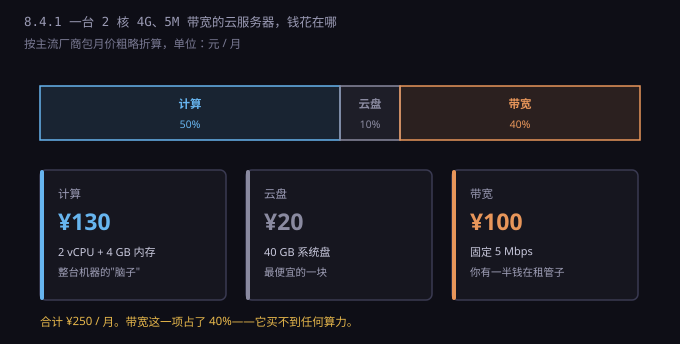
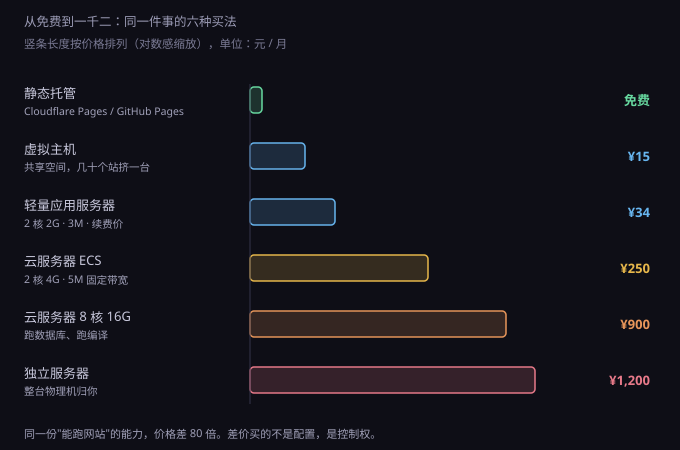
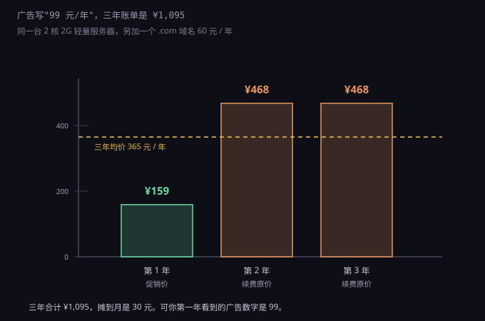

约 0.48 万字 · 3 张图 · 同一件事从 0 元卖到 1200 元，差的钱买的是什么
你去买一台笔记本电脑，付出三千块，东西就归你了。 你去租一台服务器，付出两百块，一个月后归零，什么都没留下。
所以"服务器多少钱"这句问话，其实混了两件事： 买硬件和租算力。 前者是一次性支出加折旧，后者是持续的月费。 绝大多数人问的是后者，但脑子里想的是前者。
租的时候，你租的从来不是"一台机器"，是五样可以分开计价的东西：
CPU 时间、内存、硬盘、带宽、公网 IP。
这五样在物理上是分开的：CPU 在主板插槽上，内存在条子上， 硬盘在盘位上，带宽是机房从运营商那里批发来的管道， IP 是运营商分配的一段地址。 机房把它们切成小块，重新打包，卖给你。
打包这件事本身没问题，问题是打包之后你看不见里面的比例。 一个"2 核 4G 5M"的套餐标价 250 元， 你不知道这 250 里有多少是算力、多少是管道。 而这两样东西的成本结构完全不同—— 算力会随时间贬值，管道不会。
所以真正该问的不是"一台多少钱"，是 "我需要的这五样，各自值多少钱"。 拆开看一次，以后再看到任何报价，你都能立刻判断贵在哪。
拿一个最常见的配置举例：2 核 4G 内存、40G 系统盘、5M 固定带宽。 这是个人项目和小公司官网的标配档位。

按主流云厂商的包月价粗略折算： 计算部分大约 130 元，40G 云盘 20 元，5M 固定带宽 100 元。 合计 250 元左右。
关键在最后那一块。 带宽占了 40%，可它买不到一个 CPU 周期、一字节内存。 它买的是"数据能流多快"这个许可。
这就是云服务器定价里最反直觉的地方： 你以为在租一台计算机，其实有一半钱在租一根管子。 而且这根管子的成本不随技术进步下降—— 十年前的 CPU 算力今天只要几分之一的价格， 但带宽的价格十年只降了不到一半。
为什么会这样？因为带宽不是造出来的，是运营商批发出来的。 机房要向电信、联通、移动买出口带宽，按月按 G 付钱。 这是寡头市场，价格由三家说了算，摩尔定律管不到这里。
记住这个比例，后面所有价格判断都靠它： 低配机器，带宽占比高；高配机器，算力占比高。 一台 8 核 16G 的机器，带宽可能只占账单的 10%； 一台 1 核 1G 的机器，带宽能占到 60%。
所以"升级配置"这件事，对不同档位的性价比完全不一样。 从 1 核升到 2 核，往往只是加几十块； 从 5M 升到 10M，可能是加一百。 前者买到的是算力，后者买到的是管子——而管子通常更贵。
这里有个必须说清楚的事：云上的"核"不是物理核，是 vCPU。
一台物理服务器的 CPU 可能有 64 个物理核、128 个线程。 云厂商把它切成很多份，每一份叫一个 vCPU，卖给不同的客户。 这个"切"的动作叫超卖。
超卖本身不是骗人。理由和你家的宽带一样： 一百户人家共享一根千兆光纤，因为不可能一百户同时跑满。 大多数服务器 90% 的时间 CPU 是闲的， 把闲置的时间卖出去，是资源利用率的提升。
但超卖比例决定了你买到的是什么。 同样标"2 核"，背后可能是三种完全不同的东西：
第一种，共享型。 和其他客户挤在同一批物理核上，谁忙谁抢。 你的 2 核在别人满载时可能只有 0.5 核的性能。 价格最便宜，适合跑个人博客这种没什么并发的场景。
第二种，突发性能型。 这类实例标着"2 核"，但有一个基准性能， 比如只保证 15% 的 CPU。 平时你可以超过这个基准，靠的是"CPU 积分"—— 闲着的时候攒积分，忙的时候花积分。 积分花完，CPU 就被硬压回 15%，网站立刻卡成幻灯片。
这是新手最容易踩的坑：买了个便宜的突发型实例， 部署时编译代码很爽，上线后突然来了一波流量， 积分十分钟烧光，服务直接降速， 而监控上看 CPU 只有 15%，你会以为是代码问题。
第三种，独享型。 明确保证这 2 个 vCPU 归你，不和别人抢。 价格贵一倍以上，但性能可预测。 生产环境该买这个，测试环境可以省。
判断方法很简单：看商品页有没有"基准性能""积分""共享"这些字眼。 有，就是不能跑生产的。 没有明确写"独享"或"专用"的，默认按共享理解。
内存是这五样里最便宜、最没花样的。 按 GB 算，1G 内存一个月十几块，加 4G 也就加几十。 它的成本几乎就是内存条的价格除以寿命，没有隐藏结构。
云盘就没这么简单了。它有两个坑。
第一个坑：IOPS 随容量增长。 云盘的读写速度不是一个固定值，是按容量给的。 一块 40G 的普通云盘，大概只有一两千 IOPS—— 这个数字什么概念？还不如十年前的一块机械硬盘。
你跑一个数据库，几十个并发查询打上去， 磁盘立刻成为瓶颈，CPU 却闲着。 这时候升级 CPU 完全没用，得加磁盘容量或者换更高等级的盘（ESSD）。
所以云盘的定价逻辑是"买速度必须买容量"。 想要 5000 IOPS，可能得买 200G，而你实际只用了 20G。 剩下 180G 是给速度付的钱。
第二个坑：快照和备份另收费。 系统盘 20 元一个月，但如果开了自动快照， 快照占用的空间单独计费，而且删了快照之前不能删盘。 有人开了每日快照没管，一年后账单里多出几百块。
另外要分清系统盘和数据盘。 系统盘跟着实例走，实例释放就没了； 数据盘可以单独保留、挂载、卸载。 重要数据一定放数据盘，别图省事全塞系统盘。
这一节是全篇最该记住的部分。
先搞清单位。带宽用 Mbps（兆比特每秒）标， 文件大小用 MB（兆字节）标。 一个字节是 8 个比特，所以：
5 Mbps ÷ 8 = 0.625 MB/s ≈ 640 KB/s
也就是说，一个 5M 带宽的服务器， 理论最快速度是每秒传 640 KB。 一张没压缩的手机照片 3 MB，传出去要 5 秒。 一个包含十几张图的网页 2 MB，第一个用户打开要 3 秒多。
这时候你可能觉得：3 秒也还行。 但带宽是共享的—— 两个用户同时打开，各自 1.5 秒变 6 秒； 十个用户同时来，每人 30 秒，页面基本等于打不开。
那 5M 带宽一个月能跑多少数据？ 如果 24 小时不停跑满：
0.625 MB/s × 86400 秒 × 30 天 ≈ 1.62 TB
1.6 TB。这是个很重要的数字，下面马上要用到。
现在的问题是：该买固定带宽，还是按流量付费？ 云厂商两种都卖。
固定带宽是包月：5M 一个月 100 元，跑多少都这个价。 按流量是后付费：每 GB 出流量 0.8 元左右，跑多少算多少。
分界点很好算：
100 元 ÷ 0.8 元/GB = 125 GB
一个月流量低于 125 GB，按流量便宜； 高于 125 GB，包带宽便宜。 而 125 GB 对一个正常网站来说太少了—— 一万次访问、每次 1 MB，就到顶了。
所以规律是：个人测试站按流量，正经对外服务包带宽。 反过来说，如果你只是自己用、偶尔传个文件， 买了固定带宽就是浪费，因为那 100 块买的是"上限"，不是"用量"。
还有一个更狠的场景：流量被刷。 按流量计费时，如果有人恶意反复下载你一个大文件， 你没有任何上限保护，账单可以一夜之间涨到几千。 这是真实发生过的事，下一节专门讲。
最后说一句国内外的差别。 国内带宽贵，是因为三大运营商的结算价高； 境外机房（香港、新加坡、日本）的国际带宽便宜得多。 同样两百多块，国内买 5M，境外能买 30M。
代价是延迟：国内用户访问境外服务器， 延迟从 20 毫秒涨到 60 到 200 毫秒， 而且线路会抖动。静态资源放境外可以， 要交互的应用放境外，用户会觉得"卡"。
"能跑一个网站"这件事，有六种价格完全不同的买法。

第一档，静态托管，0 元。 Cloudflare Pages、GitHub Pages、Vercel 这类服务， 托管纯 HTML/CSS/JS 完全免费，还送 HTTPS 和全球 CDN。 限制是没有后端——不能跑数据库、不能处理登录、不能收文件。 个人博客、项目文档、简历页，用这个就够了，一分钱不用花。
第二档，虚拟主机，15 元一个月。 一台服务器上开几百个账户，每个账户一个目录， 只能放 PHP 之类的脚本，配置改不了，端口只给你 80 和 443。 这是二十年前的主流方案，现在基本被云服务器取代了， 但做个小企业官网还是够便宜。
第三档，轻量应用服务器，34 元一个月。 2 核 2G、3M 带宽，独立操作系统，root 权限。 这是个人开发者最常买的档位：能装数据库、能跑 Docker、 能自己配 Nginx。新用户首年往往只要 99 元。
第四档，标准云服务器，250 元一个月。 同样是租，但网络和存储是独立的、可弹性调整的， 有安全组、快照、负载均衡、监控告警这一整套。 多出来的钱买的是"可靠性"和"可运维性"， 不是更快的 CPU。
第五档，8 核 16G，900 元一个月。 这一档开始能跑真正的东西：中等流量的后端、 自己搭的数据库、编译构建、跑几个容器。
第六档，独立服务器，1200 元起。 整台物理机归你，CPU 是真核，硬盘是真盘，没有超卖。 带宽往往给到 10M 甚至 50M 独享。 适合流量大、或者需要完全控制硬件的场景。
这六档之间差的钱，买的不是"性能"，是控制权和确定性。 0 元那一档你连配置文件都碰不到， 1200 那一档你可以自己编译内核。 中间每一档，都是在这条线上往"能控制"的方向挪一点。
四种形态，用两个维度就能分清：你能控制多少， 和你要自己管多少。
虚拟主机：控制最少，管得也最少。 给你一个目录和 FTP，剩下的全归服务商。 出问题只能提工单等回复。
云服务器：控制很多，管得也多。 操作系统归你，装什么、开什么端口、怎么配全由你决定。 代价是打补丁、防攻击、备份、监控，全是你的事。 安全组配错一个端口，数据库就裸在公网上。
独立服务器：控制最多，管得最多。 硬件故障要等机房换，但性能不打折、不共享。 一般是有专门运维的团队才用。
Serverless：控制最少（只有函数代码）， 管得也最少（连服务器都不存在）。 你上传一个函数，平台按调用次数和运行时间收费， 没人访问时收费是零。
Serverless 的问题在冷启动： 一段时间没人调用，运行环境被回收， 下一个请求要来时得重新拉起，可能多等几百毫秒到几秒。 低频接口无所谓，用户点一下等两秒就不行。
四条路的成本结构完全不同： 虚拟主机和云服务器是固定月费， Serverless 是纯变动成本， 独服是固定成本 + 折旧。 这个区别在 8.4.3 会变成生死问题，先记住。
上面说的都是"标价"。实际账单里还有一堆东西，买之前看不见。
公网 IP。 一台实例默认可能没有公网 IP，要单独买"弹性公网 IP"。 十几块一个月，而且闲置也收费—— 你绑定了不用，照样扣钱，因为地址被你占着。
快照与备份。 按占用容量计费，几毛钱一 GB 一个月，看起来便宜， 但每天一份、留三十天，累积起来不小。
对象存储与 CDN。 图片、视频、附件放对象存储，按存储量 + 请求次数 + 流出流量三份收费。 CDN 按流量收费。这两项是"用多少付多少"， 一旦有内容爆了，账单跟着爆。
数据库。 云数据库（RDS）比自己在服务器上装贵得多， 最便宜的一档也要一两百一个月。 贵的地方是自动备份、主从切换、监控—— 自己搭也能做，但要花时间。
负载均衡、日志服务、监控告警。 单看每项都只要几块几十块， 凑齐一套，一个月多出两三百很正常。
域名和备案。 .com 域名 60 到 80 元一年。 ICP 备案本身免费，但必须用国内服务器， 而且要 7 到 20 个工作日，期间网站不能对外访问。 这段时间的成本不是钱，是时间。
最容易被忽略的一项：你的时间。 一台裸服务器，从装系统到能安全地对外服务， 包括配防火墙、装 SSL、设自动备份、配日志、处理报警， 第一次做大概要两三天。 这两三天如果按工资折算，比一年的服务器费还贵。
所以"自己搭比买服务便宜"这句话，对有钱没时间的人是不成立的。 判断标准是：这件事你要做几次？ 只做一次，买现成的；要做几十次，才值得自己搭。
把上面所有东西拼起来，看三个具体场景。
场景一：纯静态的个人主页。 用 Cloudflare Pages 托管，域名一年 70 元。 月成本：6 元。没有服务器，没有带宽费， HTTPS 免费，全球 CDN 免费。
场景二：有后端的小博客。 轻量服务器 2 核 2G 3M，续费 34 元一个月； 域名平摊 6 元；图片放对象存储，一个月 5 元； 备份快照 5 元。合计：50 元一个月。 一年六百，够跑日均几千访问。
场景三：一个小 SaaS。 云服务器 2 核 4G 5M，250 元； 云数据库最低档，200 元； 对象存储 + CDN，80 元； 负载均衡 30 元；域名证书 10 元； 监控日志 30 元。合计：600 元一个月。
注意场景三的比例：服务器只占了 40%， 剩下的钱全花在"让它可靠"上。 这就是从"能跑"到"能对外服务"的差价。
再往上一档，日活上万的系统， 月成本会到三五千——不是因为服务器变贵了， 是因为要加缓存、加只读副本、加多可用区、 加日志分析、加安全防护。每一项都是一台机器或一项服务。
所以成本的形状是这样的： 从 0 到 50 元，靠选对方案；从 50 到 600，靠加组件； 600 往上，靠的是"不出事"这三个字。
最后说一个所有人都会遇到的事：促销价。

"2 核 2G 3M，99 元一年"——首页大字就是这个。 你算了一下，一个月 8 块，比一瓶饮料贵不了多少。
但那个 99 是新用户首年价。 第二年续费，价格回到 408 元一年，也就是 34 元一个月。 加上域名 60 元，第一年总支出 159 元， 第二年是 468，第三年还是 468。 三年合计 1,095 元，摊到每个月 30 元。
30 元一个月依然不贵。但这和"8 元一个月"是两个心理价位， 而决策往往是按 8 元做的。
更麻烦的是迁移成本。 第二年续费时你想换一家，就要把数据搬过去、重新配环境、 重新备案（如果换服务商且在国内）， 网站还要停机一段时间。 这些麻烦事加起来，多数人选择交钱续费。 促销价的本质是获客成本，不是让利。
所以看报价只看一个数：续费价。 促销价是营销，续费价才是成本。 商品页往下拉，找"续费价格"或"官网价"那一行。
有几个例外值得用：学生认证（在校生能买很便宜的学生机， 一般 10 元一个月左右）、新用户首单（ 确实能省第一年）、免费额度（ 对象存储、CDN、函数计算通常有每月免费额度， 小项目用不完）。
还有一招：按量付费 + 定时开关机。 测试环境只在工作时间开，晚上和周末关掉， 一个月能省一半以上。这个操作没有任何副作用， 只是要记得关。
给一套按预算走的判断，从上往下问，第一个"是"就停。
一、只有静态页面，没有后端？ 用 Cloudflare Pages 或 GitHub Pages，0 元。 别买服务器，买了也是浪费。
二、一个人用，学习或测试？ 学生机或轻量服务器最低档，10 到 35 元一个月。 接受它的性能上限，别指望它跑生产。
三、对外提供服务，有几十到几千日活？ 轻量或标准云服务器 2 核 4G，200 到 300 元一个月， 带宽包 3 到 5M。数据库先装在同一台上，别急着上云数据库。
四、日活过万，或者不能让服务停？ 这时候该考虑的不是"选哪台"，是"怎么不宕"： 多可用区、负载均衡、数据库主从、自动备份。 预算按 2000 起步算。
最后补一句常被忽略的：先算需求，再算钱。 你的网站一个月大概多少访问、每次多少流量、 峰值并发多少——这三个数算出来， 配置基本就定了。凭感觉买，八成是买多了或买少了。